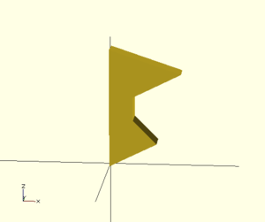
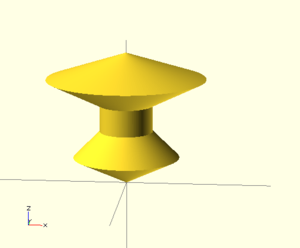

Extrusion can also be performed on polygons with points chosen by the user.
Here is a simple polygon and its 200 step rotational extrusion. (Note it has been rotated 90 degrees to show how the rotation appears; the rotate_extrude() needs it flat).
rotate([90,0,0]) polygon( points=[[0,0],[2,1],[1,2],[1,3],[3,4],[0,5]] );
rotate_extrude($fn=200) polygon( points=[[0,0],[2,1],[1,2],[1,3],[3,4],[0,5]] );
→→
For more information on polygons, please see: 2D Primitives: Polygon.

Created with the Personal Edition of HelpNDoc: Create cross-platform Qt Help files